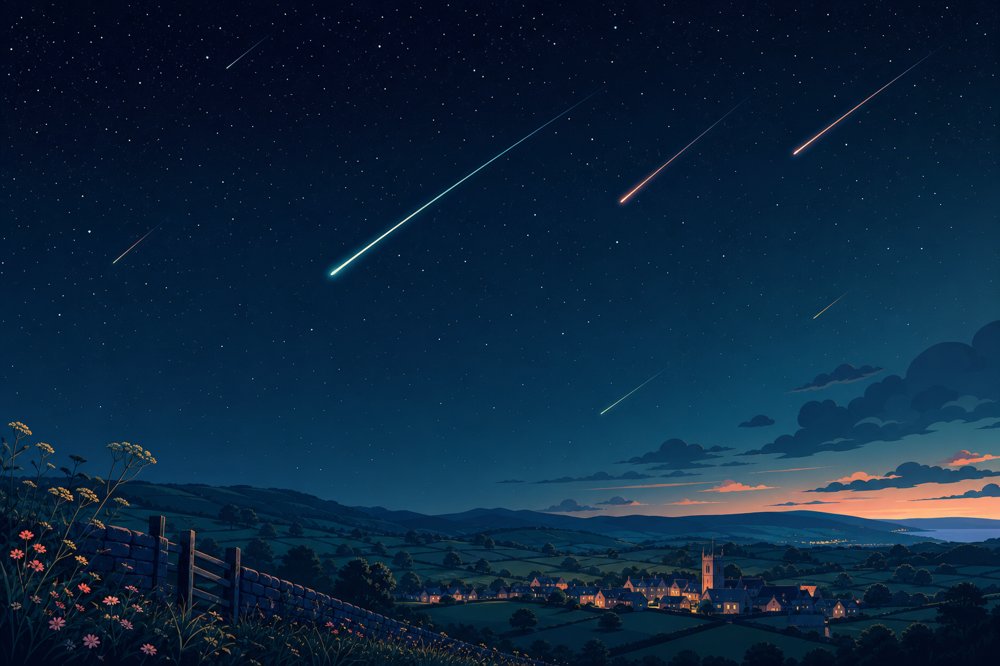

Eta Aquariids
Fast meteors from debris left by Halley's Comet. In the UK they sit low in the eastern sky before dawn, so a dark horizon matters.

UK skywatch
The Eta Aquariids are the next shower to watch from the UK, with the peak window landing between midnight and dawn on Wednesday 6 May 2026.
Fast meteors from debris left by Halley's Comet. In the UK they sit low in the eastern sky before dawn, so a dark horizon matters.
Wednesday 6 May 2026. More meteors are likely in the early hours.
The shower has a broad active period, with useful rates around the peak week.
A bright waning gibbous Moon may wash out fainter streaks at peak.
Tiny mission plan
Choose somewhere safe, away from street lights, with as little horizon clutter as possible.
The Moon rises soon after midnight, so early darkness may help before moonlight gets stronger.
Give your eyes 20 minutes to adjust. No telescope needed: a wide, patient view is better.